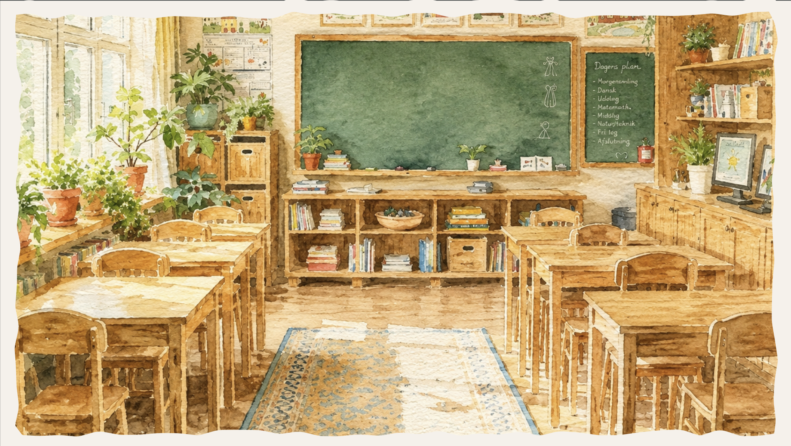
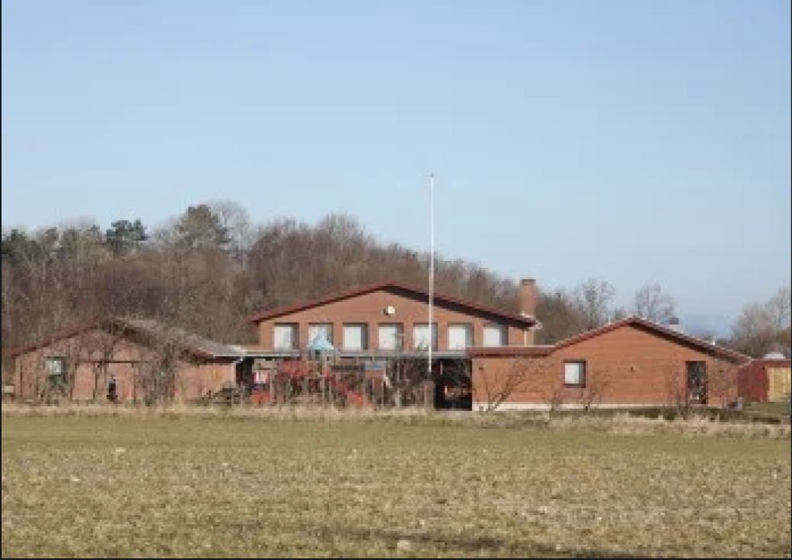
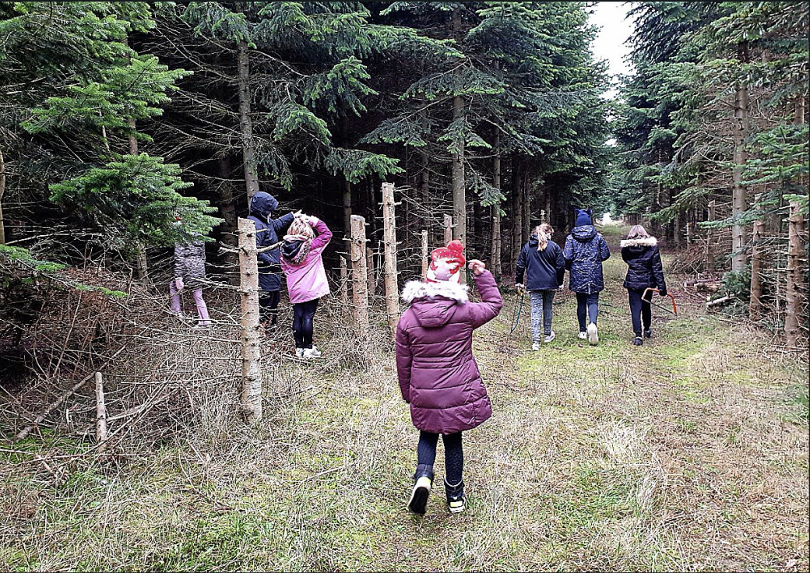
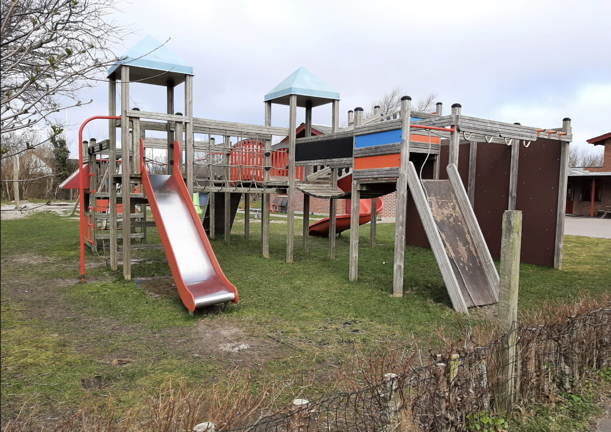

På Sejerø får børn lov til at vokse op i rolige og trygge omgivelser, hvor nærvær, fællesskab og natur er en naturlig del af hverdagen. Både i Børnehuset og på skolen bliver børnene mødt af kendte voksne, små fællesskaber og masser af plads til at udvikle sig i deres eget tempo. Ø-livet giver børnene den frihed og tryghed, som mange familier drømmer om – med naturen lige udenfor døren og et lokalsamfund, hvor alle kender hinanden.Her er der plads til barndom, nysgerrighed og nærvær.
På Sejerø er skolen meget mere end blot en ramme for undervisning. Den er et samlingspunkt og en tryg base,
hvor børn bliver mødt af nærvær, fællesskab og voksne, der kender dem godt. Og selvom skolen er en lille,
rummer den store muligheder.
I de små klasser prioriteres ro, tid og plads til det enkelte barn, og undervisningen foregår i trygge
rammer, hvor alle bliver set og hørt. For de yngste elever er der to voksne til stede i alle dansk- og
matematiktimerne, hvilket giver ekstra støtte og mulighed for at følge børnenes udvikling tæt.
Selvom skolen ligger på en lille ø, er verden aldrig langt væk. Skolen har gennem mange år haft fokus på
digital udvikling og alle elever har adgang til både computer og iPad. Skolen samarbejder desuden med andre
små ø-skoler gennem fjernundervisning, hvor børnene i perioder arbejder sammen med elever fra andre steder i
landet via videoundervisning. Det giver både faglig udvikling og følelsen af at være en del af et større
fællesskab.
Efter 7. klasse vælger mange af øens unge at tage på efterskole – blandt andet på Samsø Efterskole, som
skolen har et tæt og velfungerende samarbejde med. Det giver børnene en tryg overgang videre i deres
ungdomsliv, samtidig med at de har fået et stærkt fundament med sig fra deres opvækst.


